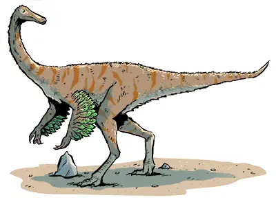

Cos'era il Gallimimus?
Il Gallimimus era un dinosauro teropode molto veloce, appartenente al gruppo degli ornitomimidi, cioè dinosauri simili agli struzzi.

Il Gallimimus era un dinosauro teropode molto veloce, appartenente al gruppo degli ornitomimidi, cioè dinosauri simili agli struzzi.
Lungo circa 6 metri, aveva:
Probabilmente onnivoro:
Viveva nei territori dell'attuale Mongolia.